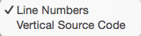

View
Balthisar Tidy uses standard Mac OS X menus that an experienced (or even novice!) user should find self-explanatory. The menu items’s descriptions below are limited to the features unique to Balthisar Tidy.

The View menu contains standard Mac OS X View menu items, but also adds some view-related menu items specific to Balthisar Tidy.
-
Tidy Options toggles the visibility of the Tidy Options pane in the document windows, as described in Hide the Tidy Options.
-
Tidy Messages toggles the visibility of the Tidy Messages pane in the document windows, as described in Hide the Tidy Messages Table.
-
Source Code reveals a submenu with additional options.

-
Line Numbers toggles line numbers in the Source HTML and Tidy HTML views. For very large documents, turning off line numbers may increase performance.
-
Vertical Source Code toggles the source area between over-under and side-by-side views of Source HTML and Tidy HTML.